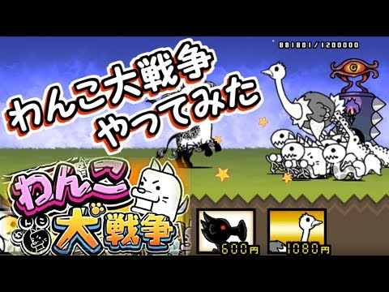
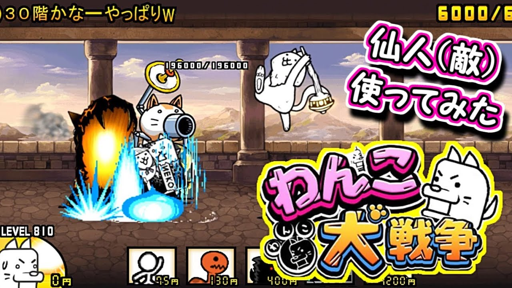

わんこ大戦争ゲーム紹介
「わんこ大戦争」は、戦略性とカジュアルさを兼ね備えたタワーディフェンスゲームです。プレイヤーはわんこの軍団を編成し、敵のにゃんこ軍団の城を攻撃して、自分の城を守ることが目標です。わんこ大戦争の最大の特徴は、多様なキャラクターたちを組み合わせて戦略的に戦うことが求められる点です。
ゲームの歴史
「わんこ大戦争」は、「にゃんこ大戦争」から派生したファンメイドのゲームとして人気を集めています。もともとは猫をテーマにした「にゃんこ大戦争」が人気を博していましたが、犬をテーマにしたわんこ大戦争が登場し、多くのファンが熱狂しています。長年にわたってアップデートが繰り返され、新しいステージやキャラクターが追加され続けており、プレイヤーに常に新しい挑戦が提供されています。
わんこ大戦争の操作方法
わんこ大戦争の操作は非常にシンプルで、初心者でもすぐに始められます。バトルに出撃させるキャラクターを選び、数字キー（1～6）を押してゲームを開始します。編成したキャラクターを使用し、敵の城を破壊するのが最終目標です。画面右上にはお金が表示されており、プレイヤーはお金を消費して新しいキャラクターを生産します。
画面の左右矢印キーで背景を変更したり、上下矢印キーでBGMを変更することも可能です。さらに、わんこ大戦争では編成コードを使ってチームを保存・共有することができ、他のプレイヤーと戦略を共有する楽しみもあります。
ステージ紹介と進行方法
現在、わんこ大戦争には6つのステージが用意されています。それぞれのステージには異なる特徴があり、進行するごとに難易度が上がります。
- ステージ1 - にゃんこ軍団
- ステージ2 - 最強の消しゴム
- ステージ3 - 赤いやつらの戦い【赤色限定】
- ステージ4 - 進撃の巨人
- ステージ5 - サイクロンズ【サイクロン限定】
- ステージ6 - 神速の強者【NEW】
わんこ大戦争の攻略と進階テクニック
わんこ大戦争では、キャラクターの特性をうまく活用することが攻略のカギとなります。壁役となるわんこやにょろ、ゴマさまなどのキャラクターを使って敵の攻撃を防ぎつつ、高い攻撃力を持つキャラクターを後方から投入するのが効果的です。特に「真レジェンドブンブン」は古代の呪いで敵の特殊能力を封じる強力なキャラで、進行に大きく貢献します。
進撃の巨人やブラックサイクロンといった高速キャラクターは、20%の確率で敵を後退させる能力を持ち、攻撃のタイミングを調整することが重要です。高い耐久力を持つキャラクターで敵の攻撃を耐えつつ、攻撃力が高いキャラクターで敵を確実に倒していきます。
また、編成コードを使って効果的なチームを組み、他のプレイヤーと攻略法を共有することで、より効率的にゲームを進めることが可能です。ステージごとの攻略ポイントや敵の弱点を把握して、最適なチームを編成しましょう。
